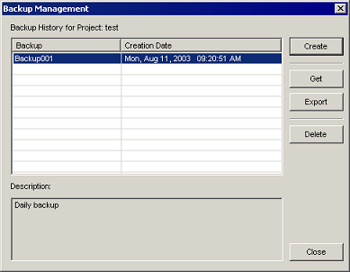
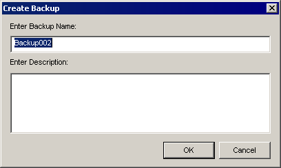

|
|
|
|
|
|
|
|
The Backup Manager creates project backups and stores them on your PC at: C:\Documents and Settings\"UserName"\My Documents\Vijeo-Designer\Vijeo-Manager\'ProjectName"\*.bkm. You can restore any version of the project in the backup history. Daily backups of your project are recommended. You can either manually set up project backups or set up automatic backups for your project.
When you restore a previous version of a project, the current project is overwritten. Before you retrieve a backup, make sure you back up the current version of the project.


The Backup Manager does not include linked data files (sound, video, and text files) in the backup file. However, the Backup Manager does back up the data files (sound, video, and text files) that are copied into the project. See the following sections for information on linking or copying data files into a project:
Adding Sound files - Section 24.2.1, Working With the Sound File Editor
Adding Video Files - Section 19.1.5.3, Video Files Editor Operations
Adding Text files - Section 11.7.4, Adding Text Files to the Target
The following table describes the Backup Management dialog box properties.
Property |
Description |
Backup History for Project |
Displays the name of the project being backed up. |
Backup Table |
Displays each backup of the project, with a user-defined name and date of the backup. |
Description |
Displays a description of the backup. |
Create |
Creates a backup of the project and adds an entry to the Backup Table. Click Create to open the Create Backup dialog box.  |
Get |
Overwrites the current version of the project with the selected backup. |
Export |
Exports the backup to the file system. |
Delete |
Removes the backup from the Backup Table. |
Close |
Exits the Backup Management window. |